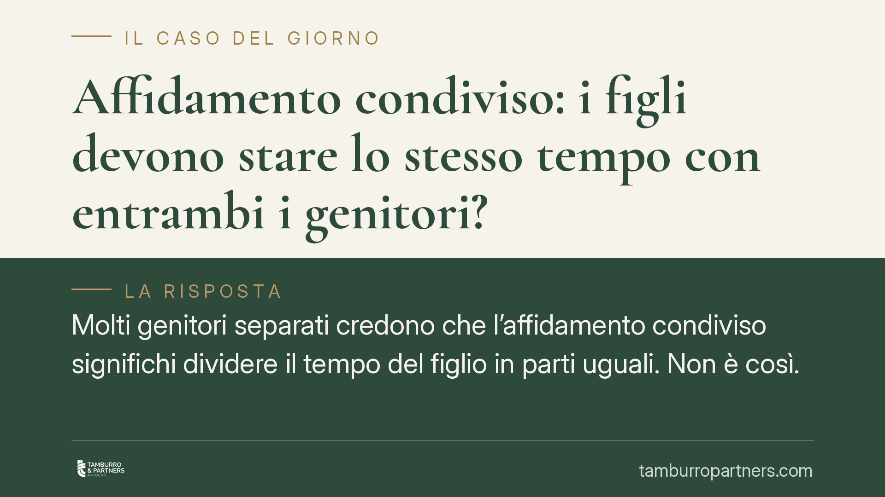

Affidamento condiviso: i figli devono stare lo stesso tempo con entrambi i genitori?
Molti genitori separati credono che l'affidamento condiviso significhi dividere il tempo del figlio in parti uguali. Non è così. La giurisprudenza ribadisce che l'obiettivo è la crescita equilibrata del minore, non un calcolo aritmetico delle ore. Il giudice decide caso per caso, ponendo al centro la stabilità emotiva del bambino e le sue esigenze concrete.

Il fraintendimento più diffuso
Quando finisce una relazione, la domanda ricorrente è: "Il bambino resterà con me esattamente metà del tempo?". La risposta, quasi sempre, è no.
L'affidamento condiviso è la regola nel nostro ordinamento, ma "condiviso" non significa "paritario". Sono due concetti distinti che vengono spesso confusi, con conseguenze pratiche rilevanti nelle trattative e nei giudizi.
Inquadramento normativo
L'affidamento condiviso è disciplinato dagli artt. 337-bis e seguenti del codice civile, introdotti nell'assetto attuale dalla riforma della filiazione (D.Lgs. 154/2013). Il principio guida è quello della bigenitorialità: il minore ha diritto di mantenere un rapporto equilibrato e continuativo con entrambi i genitori (art. 337-ter c.c.).
Qui sta il punto. La norma parla di rapporto "equilibrato e continuativo", non di divisione uguale del tempo. L'affidamento condiviso riguarda anzitutto la responsabilità genitoriale: entrambi i genitori concorrono alle decisioni importanti sulla vita del figlio (salute, istruzione, educazione, residenza abituale). È una condivisione di funzioni, non un cronometro.
La Cassazione ha più volte chiarito che la collocazione prevalente presso un genitore, con tempi di frequentazione differenziati per l'altro, è pienamente compatibile con l'affido condiviso. Ciò che conta è l'interesse del minore, valutato in concreto.
Cosa valuta il giudice
Il criterio decisivo è il superiore interesse del minore (best interest of the child). Il giudice non applica una formula fissa, ma pesa una serie di elementi concreti:
- l'età del figlio e la fase di sviluppo (le esigenze di un bambino di tre anni sono diverse da quelle di un adolescente);
- la vicinanza tra le abitazioni dei genitori e la sede scolastica;
- gli impegni lavorativi e la disponibilità effettiva di ciascun genitore;
- la continuità delle abitudini e delle relazioni sociali del minore;
- l'opinione del figlio, che deve essere ascoltato se ha compiuto dodici anni o anche prima, se capace di discernimento (art. 337-octies c.c.).
Con l'adolescenza il quadro si complica: i ragazzi hanno una vita sociale strutturata, sport, amicizie, scuola. Imporre spostamenti rigidi tra due case può risultare controproducente. Per questo, in molti casi, il tempo si organizza intorno alla stabilità del figlio, non intorno alla parità tra gli adulti.
Implicazioni pratiche
Per il genitore separato questo significa due cose.
Prima: rivendicare la "metà esatta" del tempo non è di per sé una strategia vincente. Il giudice non premia chi chiede di più, ma la soluzione che tutela meglio il figlio.
Seconda: essere collocatario "non prevalente" non svaluta il ruolo genitoriale. La responsabilità genitoriale resta piena e paritaria per le decisioni importanti. Chi ha una frequentazione più limitata conserva il diritto e il dovere di partecipare alla vita del figlio.
Attenzione anche al profilo economico: la collocazione influisce sul contributo al mantenimento. Tempi molto sbilanciati incidono sulla determinazione dell'assegno e sulla ripartizione delle spese.
Cosa fare in concreto
- Documentate la vostra disponibilità reale: orari di lavoro, distanza da scuola, capacità di gestire i tempi quotidiani del figlio. Sono elementi che il giudice valuta.
- Proponete un calendario sostenibile, non una rivendicazione simbolica. Un piano ordinato e realistico è più credibile di una richiesta paritaria astratta.
- Mettete al centro le esigenze del figlio: attività sportive, amicizie, continuità scolastica. Costruite la proposta intorno a lui.
- Privilegiate l'accordo: una regolamentazione condivisa tra i genitori è quasi sempre preferibile a una decisione imposta dal tribunale.
- Fatevi assistere prima di irrigidire le posizioni: consigliamo di valutare con un legale la soluzione più coerente con il vostro caso specifico, evitando conflitti che danneggiano soprattutto i minori.
In sintesi: l'affidamento condiviso protegge il legame con entrambi i genitori, ma non trasforma il figlio in un pacco da dividere a metà. La bussola resta il suo benessere.
---
*Contributo informativo a cura di Tamburro & Partners - Avv. Giuseppe Tamburro. Non costituisce parere legale.*
Ogni famiglia ha il suo equilibrio.
Separazione, divorzio, affidamento, assegno: se vuoi un confronto riservato su una specifica situazione, scrivi allo studio. Ti rispondiamo entro un giorno lavorativo.